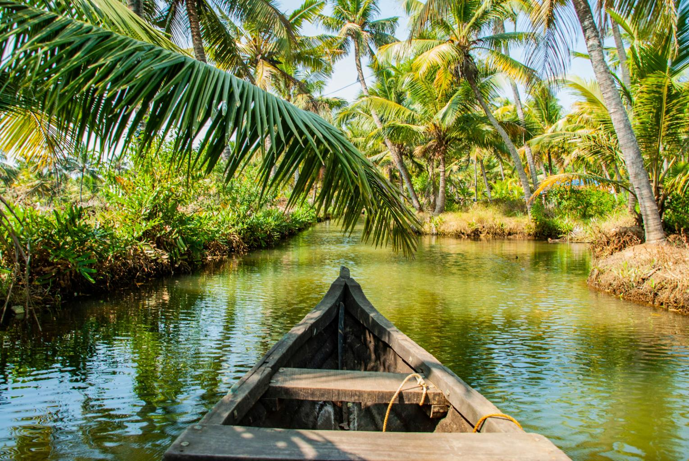
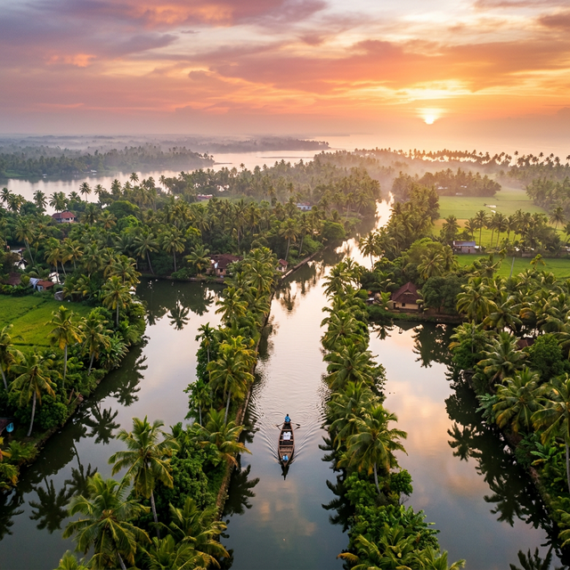
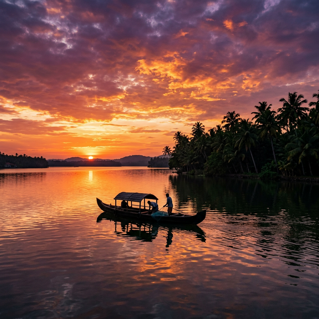
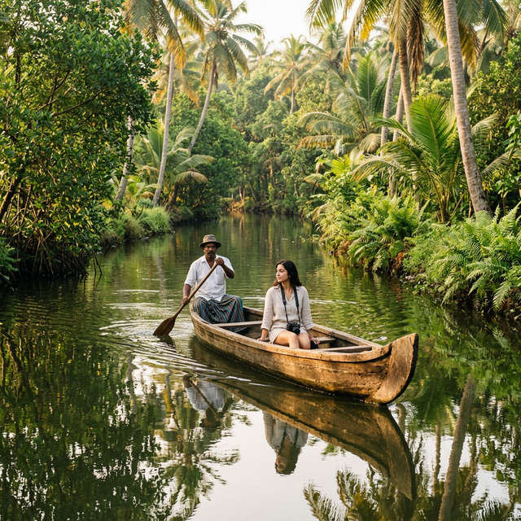

The Island in Frames
A Visual Journey
Every corner of Munroe Island is a painting waiting to be discovered.
Aerial Backwaters
.jpeg)




✨ Munroe Island, Kerala
Where the Kallada River meets Ashtamudi Lake, eight breathtaking islands form one of Kerala's most serene hidden paradises — untouched, authentic, and unforgettable.
What We Offer
Every journey through Munroe Island tells a story written in water, light, and nature.

For those seeking a deeper connection with the landscape, kayaking offers an intimate way to explore the island's intricate water routes.
With only the sound of paddles touching the water, kayakers move through narrow canals often inaccessible to larger boats. The experience brings visitors close to mangrove roots, water plants, and quiet lagoons tucked between the islands.
Early morning and evening paddles are especially magical — when soft light reflects on still water and the surrounding greenery glows in warm hues. An immersive adventure where every stroke reveals the delicate beauty of Kerala's backwater environment.
Boating is the most iconic way to explore the enchanting waterways of Munroe Island. Traditional wooden country boats glide smoothly through narrow canals that weave between coconut palms and village homes.
As the boat moves slowly across calm waters, visitors witness the gentle beauty of Kerala's backwater ecosystem. Every turn reveals a different scene: quiet fishing boats resting along the banks, reflections of swaying palms in glassy water, and small bridges connecting the islands.
Boating through Munroe Island is not simply travel — it is a slow journey through nature, culture, and the timeless rhythm of the backwaters.

The Island in Frames
Every corner of Munroe Island is a painting waiting to be discovered.

The Unique Charm
Six compelling reasons this island will stay with you forever.
A rare delta ecosystem formed at the confluence of the Kallada River and Ashtamudi Lake — unlike anywhere else in Kerala.
Drift through winding canals on traditional wooden boats. Every bend reveals a new slice of backwater paradise.
Paddle through narrow waterways inaccessible to larger vessels. Discover secret lagoons and mangrove tunnels.
Home to over 100 species including kingfishers, egrets, herons, and rare migratory birds from distant lands.
Experience traditional fishing, coir making, and the genuine warmth of Kerala's backwater village communities.
Linked to the Travancore era and Colonel John Munroe, the island's canals are living monuments of history.
Ready to Explore?
Reach out via WhatsApp to check availability, ask questions about packages, or make a booking instantly. We typically respond within minutes.